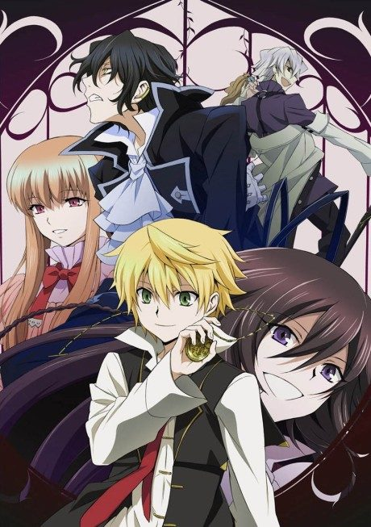

Anime
Manga
PandoraHearts
パンドラハーツ
After the anime, read the manga from Chapter 33.
7.2AniList
—Animeter
25 epEpisodes
Anime finished. Where does the manga pick up?
Start at Chapter33
The anime ends at chapter 32, but episodes 23-25 are an anime-original ending that contradicts the manga. Start at chapter 33 (volume 9) to continue; reading from chapter 1 is recommended since the anime trims early material. The manga is finished at 107 chapters.
132107 end
Season 1Start reading here